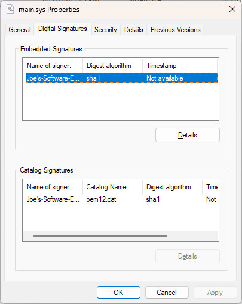
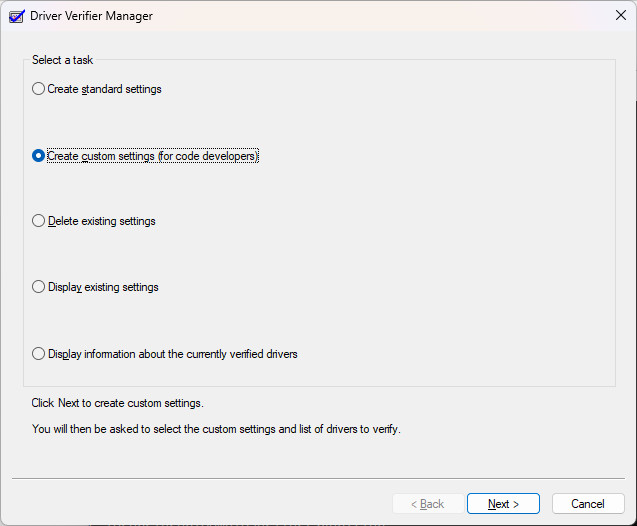
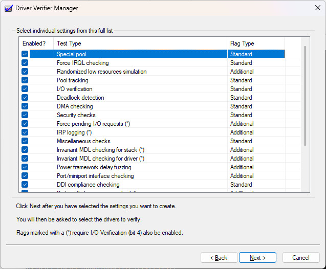
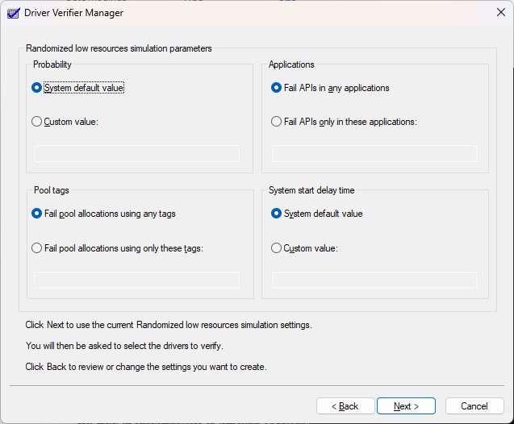
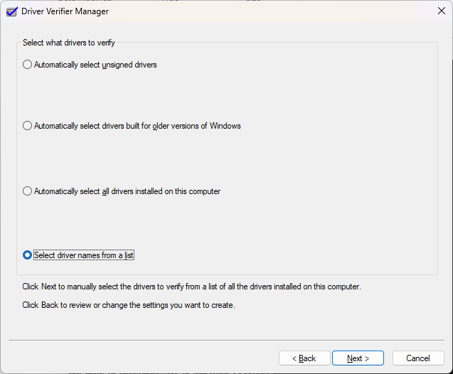
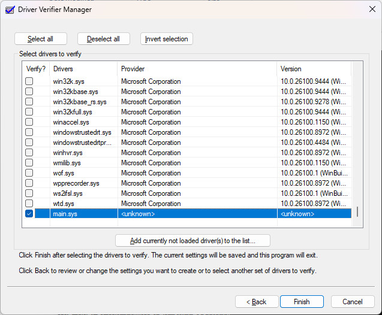
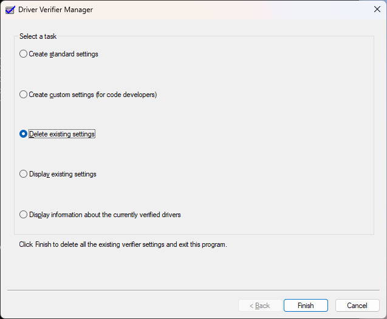

Steward
分享是一種喜悅、更是一種幸福
驅動程式 - Windows Driver Model (WDM) - 如何使用verifier驗證驅動程式
Windows系統本身有一個內建的驅動程式驗證工具Verifier，該工具不需要額外安裝就可以做驅動程式的IRP、記憶體等項目驗證，使用者電腦如果沒有安裝WHQL驗證工具，則可以使用此工具先做簡單驗證，當然，建議要Release驅動程式前，還是必須做一次WHQL驗證，確保Release的驅動程式不會有問題，在測試Verifier之前，必須確定驅動程式有TestSign或者正式的簽章，下圖是司徒使用的測試簽章

執行Command Line，然後輸入：verifier

全選

Next

選擇從清單選擇

選擇測試的驅動程式

重新開機後，可以使用Query查詢結果
C:\> verifier /query
Time Stamp: 10/01/2026 14:03:56.409
Verifier Flags: 0x03bfefbf
Standard Flags:
[X] 0x00000001 Special pool.
[X] 0x00000002 Force IRQL checking.
[X] 0x00000008 Pool tracking.
[X] 0x00000010 I/O verification.
[X] 0x00000020 Deadlock detection.
[X] 0x00000080 DMA checking.
[X] 0x00000100 Security checks.
[X] 0x00000800 Miscellaneous checks.
[X] 0x00020000 DDI compliance checking.
Additional Flags:
[X] 0x00000004 Randomized low resources simulation.
[X] 0x00000200 Force pending I/O requests.
[X] 0x00000400 IRP logging.
[X] 0x00002000 Invariant MDL checking for stack.
[X] 0x00004000 Invariant MDL checking for driver.
[X] 0x00008000 Power framework delay fuzzing.
[X] 0x00010000 Port/miniport interface checking.
[X] 0x00040000 Systematic low resources simulation.
[X] 0x00080000 DDI compliance checking (additional).
[X] 0x00200000 NDIS/WIFI verification.
[X] 0x00800000 Kernel synchronization delay fuzzing.
[X] 0x01000000 VM switch verification.
[X] 0x02000000 Code integrity checks.
Internal Flags:
[X] 0x00100000 Extended Verifier flags (internal).
[X] Indicates flag is enabled.
Verifier Statistics Summary
Raise IRQLs: 0
Acquire Spin Locks: 0
Synchronize Executions: 0
Trims: 36196
Pool Allocations Attempted: 12322
Pool Allocations Succeeded: 12322
Pool Allocations Succeeded SpecialPool: 12322
Pool Allocations With No Tag: 0
Pool Allocations Not Tracked: 817
Pool Allocations Failed: 0
Pool Allocations Failed Deliberately: 0
Driver Verification List
MODULE: main.sys (load: 0 / unload: 0)
MODULE: ndis.sys (load: 1 / unload: 0)
Pool Allocation Statistics: ( NonPaged / Paged )
Current Pool Allocations: ( 5029 / 132 )
Current Pool Bytes: ( 4038335 / 18882 )
Peak Pool Allocations: ( 5041 / 133 )
Peak Pool Bytes: ( 4046431 / 19546 )
Contiguous Memory Bytes: 0
Peak Contiguous Memory Bytes: 0
MODULE: netadaptercx.sys (load: 0 / unload: 0)
MODULE: mbbcx.sys (load: 0 / unload: 0)
MODULE: wificx.sys (load: 0 / unload: 0)
MODULE: wdiwifi.sys (load: 0 / unload: 0)
如果要移除Verifier測試項目，只需要選擇Delete即可

P.S. 如果遇到每次開機都會發生BSOD，只要進入安全模式移除測試即可